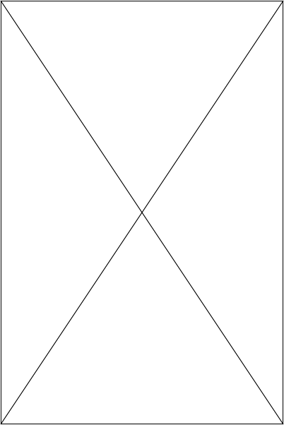

About Silvermancer
“Any sufficiently advanced technology is indistinguishable from magic”. - Arthur C. Clarke, 1962.
At Silvermancer, we believe of the transformative power of art with the latest techniques of technology. Nature cannot be fooled, but human perception can. With our curated artwork, we hope to exemplify that quote with showing that new technology is not to be feared, but to be harnessed and utilized to make our creativity flow freely. We offer a diverse range of artistic styles and mediums that balances keeping tribute to the experts of the past with bringing in the new school of theory and design. Let us be your sanctuary where imagination takes shape, and art comes to life. Technology is kept in check by nature, and nature is enhanced by technology. Step into the realm of Silvermancer and let the magic of art captivate your creativity.